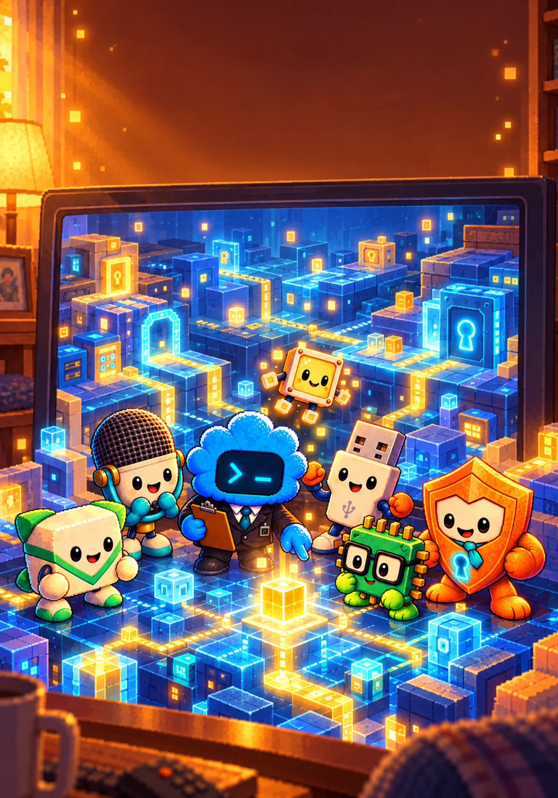

Tajný svet PixelkovAko vznikli PixelkoviaKniha prvá
Kniha prvá · Rozprávky pred dobrodružstvom
Ako vznikli Pixelkovia
Odkiaľ sa vzali malí obyvatelia sveta za obrazovkou? V troch ilustrovaných rozprávkach spoznáte prvé svetielko, Pika a jeho kamarátov aj tajomstvo bezpečnej brány. Prečítajte si ich pred spoločným dobrodružstvom – alebo len tak, keď máte chuť na príbeh.
Tri uzavreté rozprávky · funguje aj bez hry a druhej knihy.
Samostatne 4,99 € · predaj pripravujeme